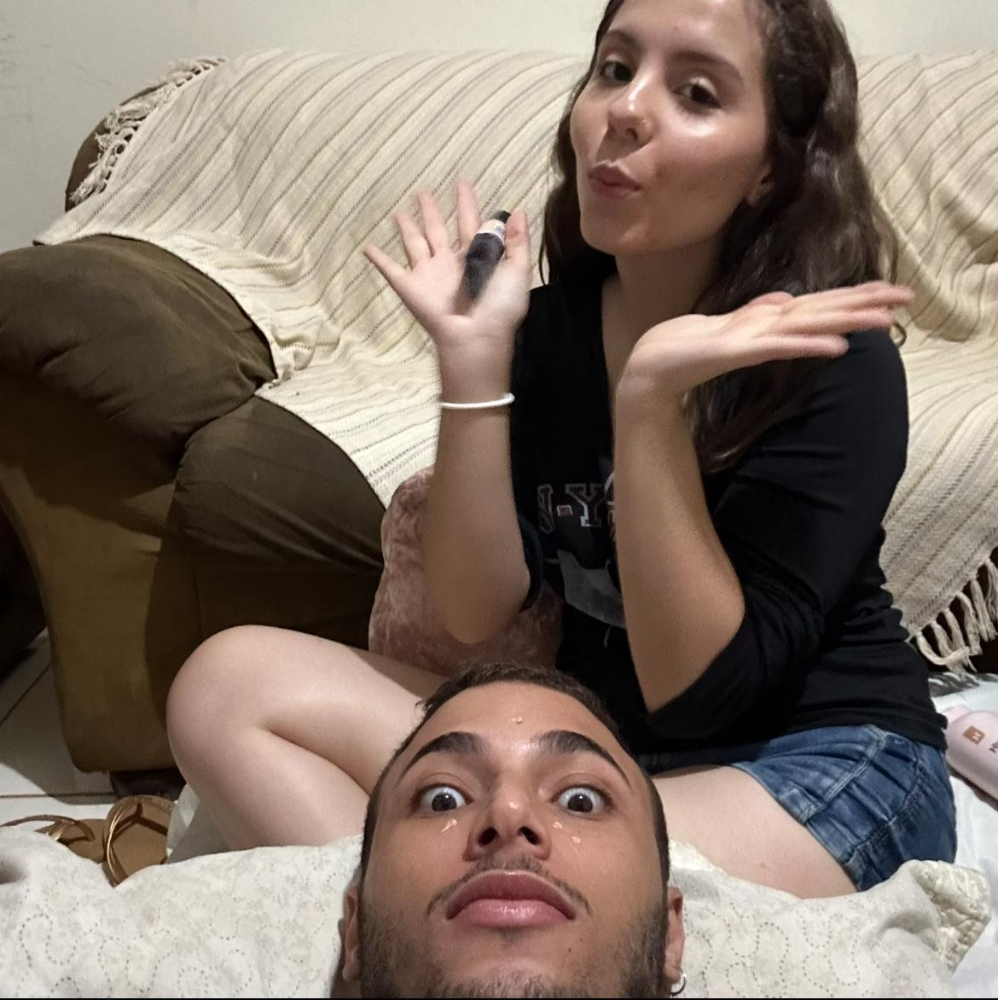

Hoje, 19 de agosto, completamos 9 meses de um amor que só cresce. Nove meses escolhendo você todos os dias, aprendendo a te amar cada vez mais e sendo o seu lugar seguro. Feliz nosso mês, meu Amor 💛

A cada dia que passa, meu coração se enche mais de carinho e admiração por você.
Isso é pra quando você estiver sentindo algo:
Razão para eu te amar:
...
Agora, meu amor, eu separei algo muito especial pra você...
Uma música que expressa tudo que eu sinto. Clica aqui e deixa ela tocar enquanto você pensa em nós 💕
🎶 Ouvir Nossa Música 🎶Dom Bacon - onde você se sentiu em casa comigo ♡
✨ Este site é um projeto de amor contínuo. Com o passar do tempo, vou atualizá-lo com novas fotos, músicas e mensagens, para que ele possa ficar aceso no seu coração e você possa entrar nele sempre que quiser, é apenas um lembrete do meu carinho. ✨